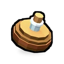

Adamantite Ingot
Adamantite Ingot is a rare material. Smelted adamantite. Used for the toughest gear.
Item sources
| Source | Quantity | Rarity | Notes |
|---|---|---|---|
| Sandstone Golem | 1–2 | 1/19 | |
| The Unbound | 1–2 | 1/19 | |
| Cult Leader | 1–2 | 1/20 | |
| Possessed Sarcophagus | 1–2 | 1/20 | |
| Lesser Cult Leader | 1 | 1/40 | |
| Bandit Elite | 1 | 1/100 | |
| Mummy | 1 | 1/100 | |
| Rockling | 1 | 1/119 | |
| Desert Worm | 2–3 | 1/131 | Rare Drop table |
| Possessed Sarcophagus | 2–3 | 1/131 | Rare Drop table |
| Sandstone Golem | 2–3 | 1/131 | Rare Drop table |
| Scrap Warlord | 2–3 | 1/131 | Rare Drop table |
| The Unbound | 2–3 | 1/131 | Rare Drop table |
| Bandit King | 1 | 1/400 | Rare Drop table |
| Bernie | 1 | 1/400 | Rare Drop table |
| Cult Leader | 1 | 1/400 | Rare Drop table |
| Cyclops | 1 | 1/400 | Rare Drop table |
| Punchy | 1 | 1/400 | Rare Drop table |
| Shooty | 1 | 1/400 | Rare Drop table |
| Lesser Cult Leader | 2–3 | 1/525 | Rare Drop table |
| Mummy | 2–3 | 1/525 | Rare Drop table |
| Raider | 2–3 | 1/525 | Rare Drop table |
| Cave Spider | 2–3 | 1/1,051 | Rare Drop table |
| Rockling | 2–3 | 1/1,051 | Rare Drop table |
| Sand Veil Cultist | 2–3 | 1/1,051 | Rare Drop table |
| Sand Zombie | 2–3 | 1/1,051 | Rare Drop table |
| Wormling | 2–3 | 1/1,051 | Rare Drop table |
| Garbage Man | 1 | 1/1,200 | Rare Drop table |
| Slime King | 1 | 1/1,200 | Rare Drop table |
| Bandit Elite | 1 | 1/1,600 | Rare Drop table |
| Super Zombie | 1 | 1/1,600 | Rare Drop table |
| Bandit | 1 | 1/3,200 | Rare Drop table |
| Cultist | 1 | 1/3,200 | Rare Drop table |
| Oak Entling | 1 | 1/3,200 | Rare Drop table |
| Slime | 1 | 1/3,200 | Rare Drop table |
| Squirrel | 1 | 1/3,200 | Rare Drop table |
| Zombie | 1 | 1/3,200 | Rare Drop table |
| Tier 2 Endless chest | 1–2 | 3% of its rows | Chest |
| Tier 3 Endless chest | 4–6 | 12% of its rows | Chest |
| Tier 4 Endless chest | 6–10 | 11.76% of its rows | Chest |
| Dark chest | 6–10 | 12% of its rows | Chest |
| Royal Chest | 8–12 | 9.8% of its rows | Chest |
| Hellish Desert chests | 1–2 | 5.9% of its extra row | Endless Dungeon |
Made by
Level 30; makes 1:
 Adamantite Ore ×25
Adamantite Ore ×25 Coal ×12
Coal ×12
Level 33, at the Master Refinery; makes 1:
 Mithril Ingot ×12
Mithril Ingot ×12 Scrap ×5
Scrap ×5 Slime Ball ×1
Slime Ball ×1- Coal ×6
Quest rewards
- Masterwork
- Past the Best
- Deeper Roots
- Master Builder
- Deepest Roots
- Grand Builder
- Still Air
- Something Under the Sand
- Dock His Pay
- Wake the Dead
- The Prisoner
- Red Horizon
- Melting Pot
Uses
| Makes | Takes | Level | Notes |
|---|---|---|---|
 Orichalcum Ingot Orichalcum Ingot | 12 | 50 | Master Refinery |
 Adamantite Helmet Adamantite Helmet | 5 | 30 | |
 Adamantite Armor Adamantite Armor | 10 | 30 | |
 Adamantite Sword Adamantite Sword | 5 | 30 | |
 Bandit Blade (A) Bandit Blade (A) | 10 | 35 | |
 Ipe Bow Ipe Bow | 3 | 30 | |
 Adamantite Buckler Adamantite Buckler | 1 | 30 | |
 Ironbark Tonic ×2 | 2 | 35 | Cookhouse |
 Riveted Plate Riveted Plate | 1 | 60 | Smelter |
 Punchy's Spiked Hat Punchy's Spiked Hat | 10 | 40 |
Repair Station
The Repair Station mends these with it:
- Adamantite Helmet
- Adamantite Armor
- Adamantite Sword
- Adamantite Buckler
 Spiked Buckler
Spiked Buckler Kris
Kris- Bandit Blade (A)
Notes
Not written yet
When Adamantite Ingot is worth getting, and what to do with it.
Gallery
Not written yet
No pictures yet: renders, models and animations go here.
Trivia
Not written yet
Anything else worth knowing.
Changes
Not written yet
What changed for Adamantite Ingot, update by update.